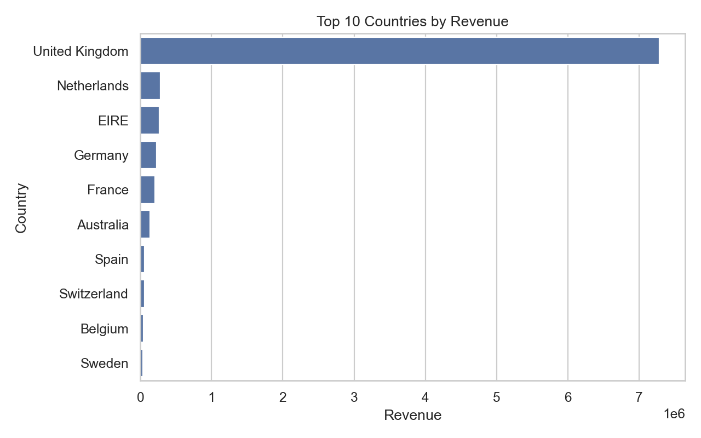
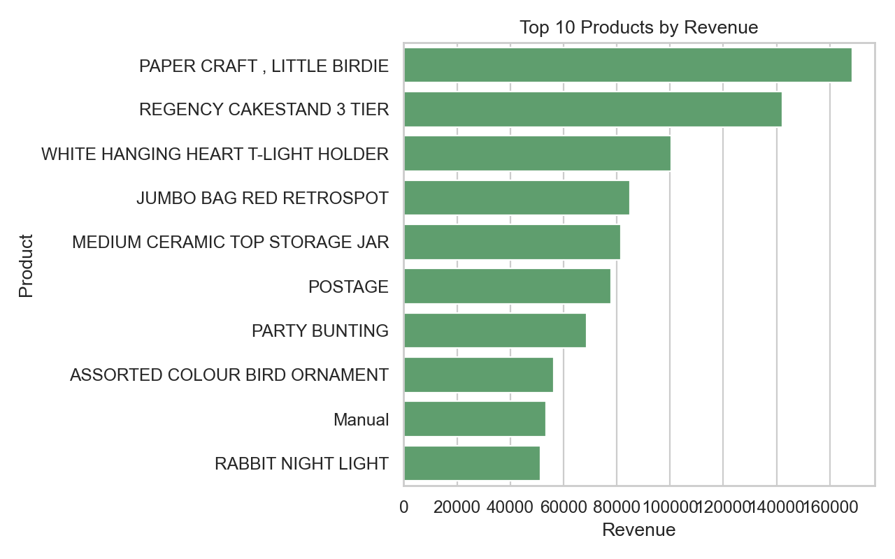
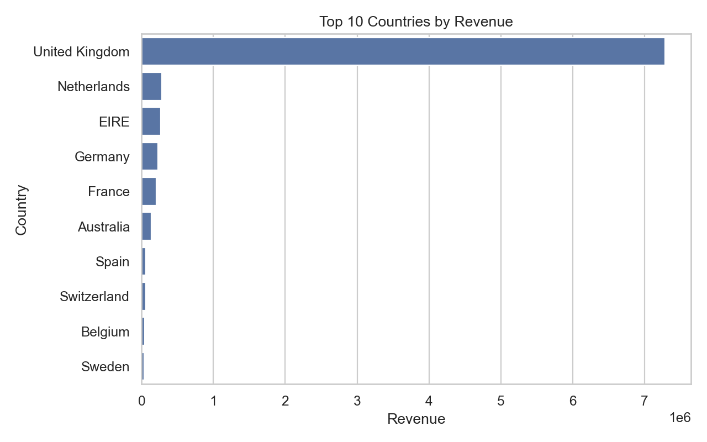
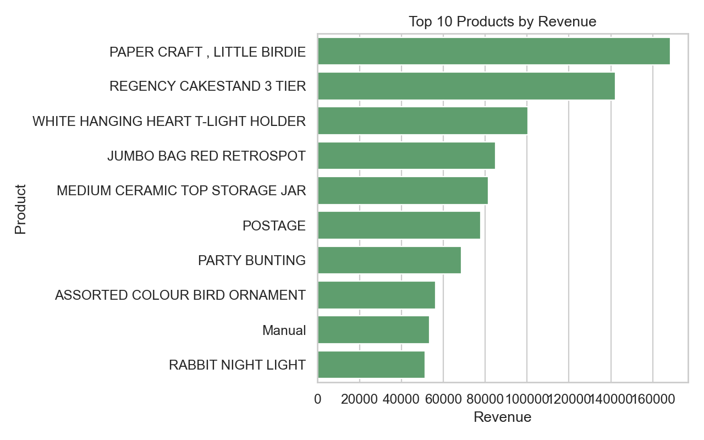

Overview
This project cleans transaction data, creates a revenue feature, and highlights monthly trends, geographic concentration, and top products.

Methodology
- Standardized columns and parsed dates from the raw Excel file.
- Removed cancellations, missing customers, and invalid rows.
- Added a TotalPrice feature for revenue calculations.
- Aggregated revenue by month, country, and product.
Key Insights
- Revenue peaks in October-November, showing strong seasonality.
- The UK dominates sales, with other countries far behind.
- Top gift and decor items drive a large share of revenue.
- Shipping/adjustment line items affect product reporting.
Charts
 


